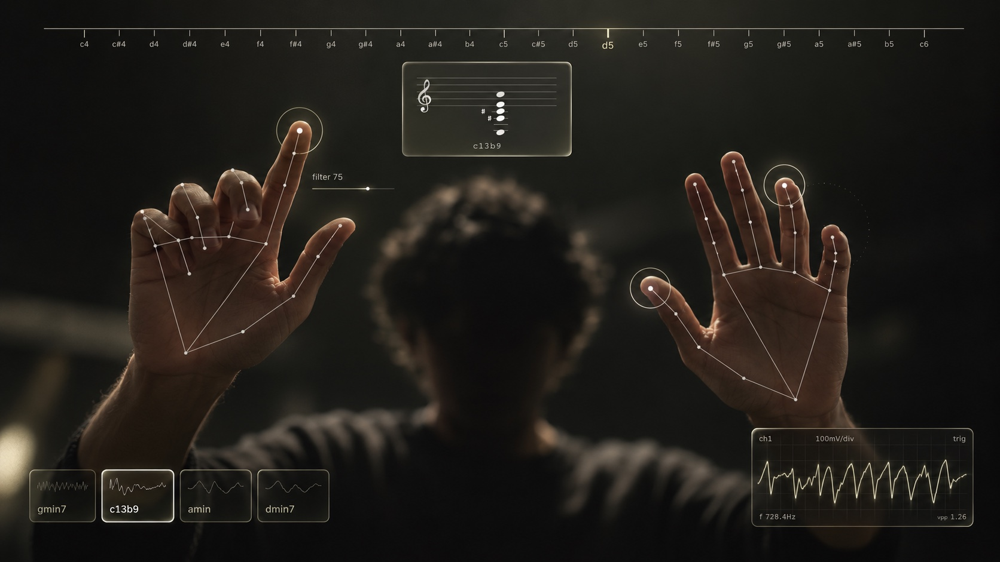
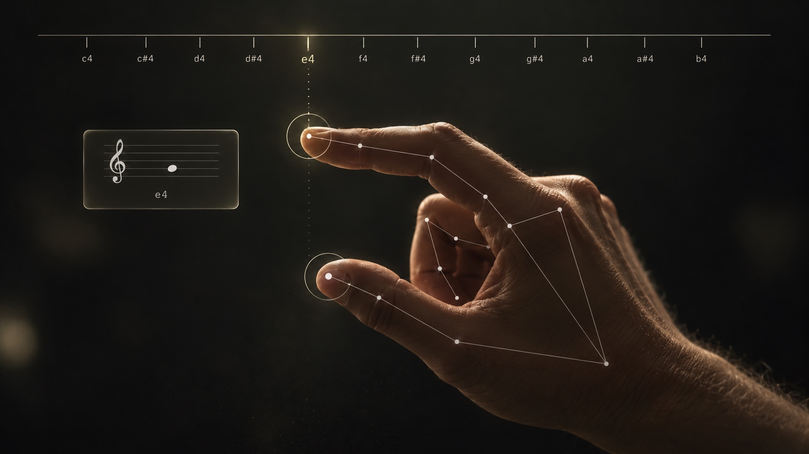
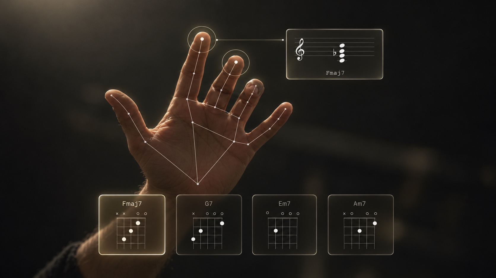
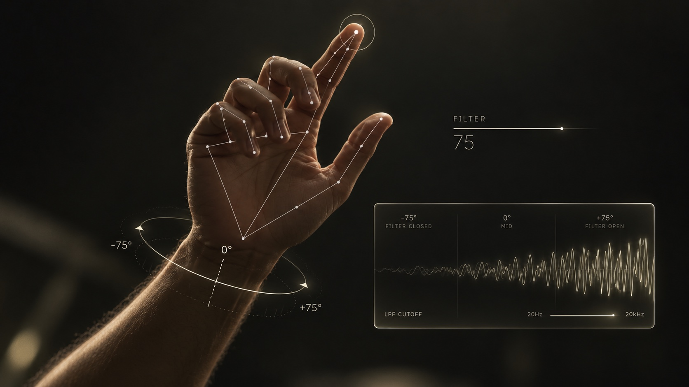
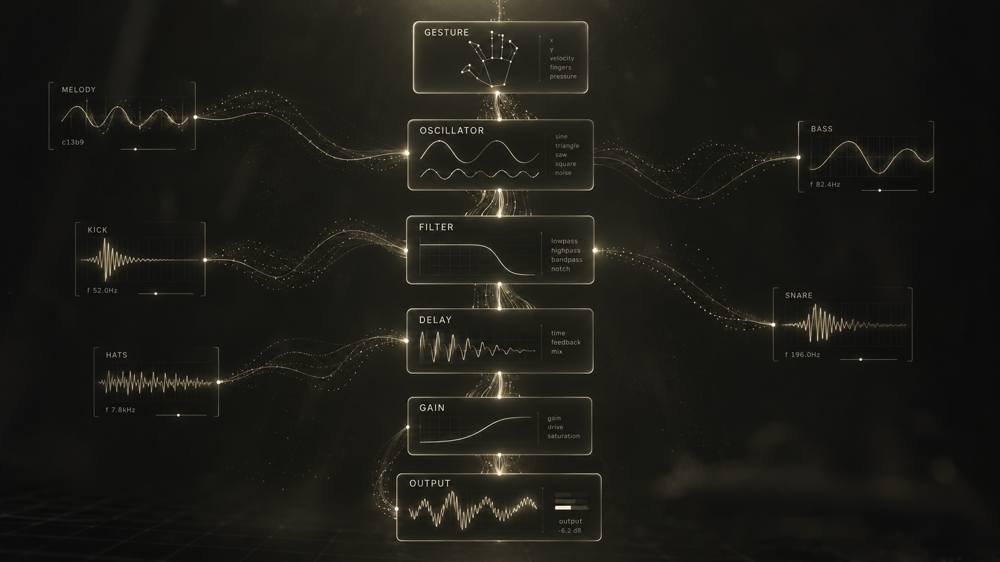

01 / MELODY↗
Pinch. Play.
Use your right hand to find notes along the pitch ruler. Index for in-key notes, middle for the color outside them.
RIGHT HANDTHUMB + FINGER
A synthesizer you play with your hands. No keys to learn. No gear to plug in. Just move, listen, and find your sound.
Voidkeys turns the space in front of your camera into a playable synth. One hand finds notes. The other holds chords. Twist your wrist to open the filter and change the mood.
Meet your new controls ↓




A few natural movements are all it takes to make a whole arrangement.
Use your right hand to find notes along the pitch ruler. Index for in-key notes, middle for the color outside them.
Your left hand triggers four chord slots. Let go to release. The notes appear as a floating score.
Roll your wrist to sweep the synth filter. Open the sound up or tuck it back into the mix.
Oscillators make the notes. A filter gives them shape. Delay leaves a little space behind. Even the drums are built live — no sample library hiding under the hood.
An 8-bit kit and synth bass keep time. Pick a groove, set the tempo, and let it roll.
Choose a progression or build your own. AUTO mode keeps the melody in the pocket.
Hand tracking runs right in your browser. The camera feed never leaves your device. No account. No upload. No backend.
Open Voidkeys. Allow camera access. Press power. The first note is yours.
Play Voidkeys ↗